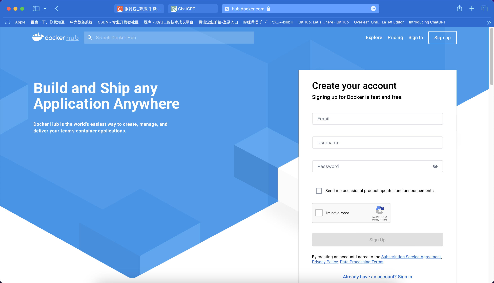
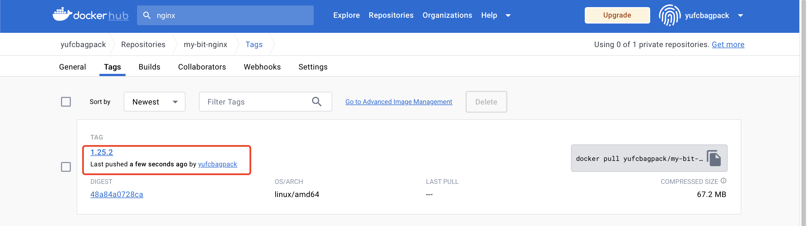

第四章-镜像仓库
概念和架构
镜像仓库(Docker Registry)负责存储、管理和分发镜像，并且提供了登录认证能力建立了仓库的索引。
镜像仓库管理多个 Repository， Repository 通过命名来区分。每个 Repository 包含个或多个镜像，镜像通过镜像名称和标签(Tag)来区分。整体视图如下。
镜像仓库(Registry)：要从哪一个镜像仓库拉取镜像，通常通过 DNS 或 IP 地址来确定一个镜像仓库如 hub.docker.com
一个 Registry 中可以存在多个Repository·Repository可分为“顶层仓库”和“用户仓库”;用户仓库名称格式为“用户名/仓库名”每个仓库可以包含多个 Tag(标签)，每个标签对应一个镜像
Repository：由某特定的.docker 镜像的所有迭代版本组成的镜像仓库镜像名称 (name)+标签(tag):如 nginx:latest
认证能力:提供用户注册，登录、登出能力
索引:提供镜像的索引信息，方便检索
一个容器镜像包含了两个部分，一个是元数据，其实就是由 dockerfile 构建出来的描述文件，这个描述文件会说这个容器镜像有多少层，每一层里面有什么内容，它的checksum这些信息都会记录下来，还有最终的可执行文件在哪就是在存储数据里面就是在一个一个的 blob 里面，真正占有空间的就是这些 blob。
镜像仓库的分类和工作机制
按是否对外开放划分
公有仓库：这些仓库像阿里云和dockerhub一样，被置于公共网络上，允许无需登录即可下载镜像，为广大用户提供服务。
私有仓库：这些仓库不对外开放，通常位于私有网络中，只有公司内部员工可以访问和使用。
按供应商和面向群体划分
赞助注册表（Sponsor Registry）：这是第三方注册表，供客户和Docker社区版用户使用。
镜像注册表（Mirror Registry）：这是第三方注册表，只有已注册用户才能访问，例如，阿里云注册后方可使用。
供应商注册表（Vendor Registry）：由发布Docker镜像的供应商提供的注册表服务，例如，Google和Redhat提供了这样的镜像仓库。
私有注册表（Private Registry）：这是由内部实体提供的注册表，没有防火墙和额外的安全层，仅供内部使用。
仓库的使用
镜像仓库使用流程
通过 docker login 登录仓库
Docker pull 拉取需要的镜像
通过 dockerfile 或者 commit 等方式制作完镜像通过 docker push 上传到仓库
仓库的拉取机制
启动容器时，docker daemon 会试图从本地获取相关的镜像。本地镜像不存在时，其将从 Registry 中下载该镜像并保存到本地。
常用的镜像仓库
docker hub
dockerhub是全球最大的镜像仓库，基本上可以说想要啥这里都有。

然后我们可以搜索自己想要的镜像。
然后有两种，一种是经过认证的镜像，一种是社区的镜像。一般建议使用经过认证的，比较靠谱。
镜像仓库命令
| 命令 | 别名 | 功能 |
|---|---|---|
| docker login | 登录仓库 | |
| docker pull | docker image pull | 拉取镜像 |
| docker push | docker image push | 推送仓库 |
| docker serach | 查找仓库 | |
| docekr logout | 登出仓库 |
如何学习一个命令。
第一种办法。
docker [命令名称] --help[root@ALiCentos7:~]$ docker login --help
Usage: docker login [OPTIONS] [SERVER]
Log in to a registry.If no server is specified, the default is defined by the daemon.
Options: -p, --password string Password --password-stdin Take the password from stdin -u, --username string Username[root@ALiCentos7:~]$第二种办法。
网站上的使用手册。
docker login
登陆到一个 Docker 镜像仓库，如果未指定镜像仓库地址，默认为官方仓库 Docker Hub。
docker login [OPTIONS] [SERVER]-u :登陆的用户名-p :登陆的密码docker login -u 用户名 -p 密码在此之前，我们要在docker官网上先注册一个账号。
docker pull
从镜像仓库中拉取或者更新指定镜像。
docker pull [OPTIONS] NAME[:TAG|@DIGEST]-a : 拉取所有 tagged 镜像--disable-content-trust : 忽略镜像的校验,默认开启docker pull nginx:1.25.2当然用这个id也可以下载。
xxxxxxxxxxdocker pull nginx@sha256:48a84a0728cab8ac558f48796f901f6d31d287101bc8b317683678125e0d2d35这样即可。
docker push
xxxxxxxxxxdocker push [OPTIONS] NAME[:TAG]xxxxxxxxxx-a : 推送所有 tagged 镜像--disable-content-trust : 忽略镜像的校验, 默认开启把本地的镜像推到镜像仓库中去。
其实这些概念的理解和Git很相像。
我们上一小节已经下载了一个仓库，能否直接push呢？
xxxxxxxxxx[root@ALiCentos7:~]$ docker push nginx:1.25.2The push refers to repository [docker.io/library/nginx]563c64030925: Layer already exists 6fb960878295: Layer already exists e161c3f476b5: Layer already exists 8a7e12012e6f: Layer already exists d0a62f56ef41: Layer already exists 4713cb24eeff: Layer already exists 511780f88f80: Layer already exists errors:denied: requested access to the resource is deniedunauthorized: authentication required
[root@ALiCentos7:~]$ 我们肯定是没有这个权限的，我们怎么能向nginx这个组织推我们自己的仓库呢？
我们可以推到我们自己的仓库里面去。
其实和Github是一个道理。
先创建一个仓库。
但是，我们还要改我们本地那个镜像的tag，不能用别人的那个叫nginx的了。
xxxxxxxxxxdocker tag nginx:1.25.2 yufcbagpack/my-bit-nginx:1.25.2xxxxxxxxxx[root@ALiCentos7:~]$ docker push yufcbagpack/my-bit-nginx:1.25.2The push refers to repository [docker.io/yufcbagpack/my-bit-nginx]563c64030925: Mounted from library/nginx 6fb960878295: Mounted from library/nginx e161c3f476b5: Mounted from library/nginx 8a7e12012e6f: Mounted from library/nginx d0a62f56ef41: Mounted from library/nginx 4713cb24eeff: Mounted from library/nginx 511780f88f80: Mounted from library/nginx 1.25.2: digest: sha256:48a8xxxxxcab8ac558f48796f901f6dxxxxxx317683678125e0d2d35 size: 1778[root@ALiCentos7:~]$这样就推送完成了。

这样我们远程就能看到了。
docker search
从docker hub中查找想要的镜像。
xxxxxxxxxxdocker search [OPTIONS] TERMxxxxxxxxxx--no-trunc : 显示完整的镜像描述-f <过滤条件> : 列出收藏数不小于指定值的镜像找到了很多和nginx有关系的。
工作中一般不在这里找，肯定上官网方便，直接搜，搜到合适的直接pull就行了。
docker logout
xxxxxxxxxxdocker logout [SERVER]镜像相关命令（部分）
因为后面学习我们要暂时用到一些镜像相关的命令，所以这里先学一点。
后面我们还会详细学习镜像相关的命令。
docker images
列出本地镜像。
xxxxxxxxxxdocker images[OPTIONS] [REPOSITORY[:TAG]]一些别名。
xxxxxxxxxxdocker image listdocker image ls一些参数。
xxxxxxxxxx-a : 列出本地所有的镜像(含中间映像层，默认情况下，过滤掉中间映像层);--digests : 显示镜像的摘要信息;-f : 显示满足条件的镜像;--format : 指定返回值的模板文件;--no-trunc : 显示完整的镜像信息;-q : 只显示镜像 ID。这里是一些例子。
具体用法可以看文档。
与此同时，docker的命令可以和shell命令结合使用。
xxxxxxxxxxdocker images | grep nginxdocker image inspect
查看一个镜像的详情。
xxxxxxxxxxdocker image inspect nginx:1.25.2用id也是可以的。
docker tag
标记本地镜像，将其归入某一仓库。
Nginx了解
一种web服务器。
Centos7安装Nginx
检查系统上是否有Nginx
xxxxxxxxxx(base) [yufc@ALiCentos7:~]$ ps -ef | grep nginxyufc 32437 32299 0 09:26 pts/0 00:00:00 grep --color=auto nginx(base) [yufc@ALiCentos7:~]$ nginxbash: nginx: command not found(base) [yufc@ALiCentos7:~]$经过检查，是没有的。如果有，就可以先选择卸载nginx，再进行重新安装。
卸载Nginx
如果是通过yum源安装的，那些在很简单，直接yum remove nginx即可。
安装Nginx
centos 配置 nginx 源
xxxxxxxxxxrpm -Uvh http://nginx.org/packages/centos/7/noarch/RPMS/nginx-release-centos-7-0.el7.ngx.noarch.rpmxxxxxxxxxx(base) [yufc@ALiCentos7:~]$ sudo rpm -Uvh http://nginx.org/packages/centos/7/noarch/RPMS/nginx-release-centos-7-0el7.ngx.noarch.rpm[sudo] password for yufc: Retrieving http://nginx.org/packages/centos/7/noarch/RPMS/nginx-release-centos-7-0.el7.ngx.noarch.rpmwarning: /var/tmp/rpm-tmp.YwES4G: Header V4 RSA/SHA1 Signature, key ID 7bd9bf62: NOKEYPreparing... ################################# [100%]Updating / installing... 1:nginx-release-centos-7-0.el7.ngx ################################# [100%](base) [yufc@ALiCentos7:~]$ xxxxxxxxxx(base) [yufc@ALiCentos7:~]$ ll /etc/yum.repos.d/total 40-rw-r--r-- 1 root root 675 Apr 27 23:11 CentOS-Base.repo-rw-r--r-- 1 root root 998 Dec 11 2018 CentOS-SCLo-scl.repo-rw-r--r-- 1 root root 971 Oct 29 2018 CentOS-SCLo-scl-rh.repo-rw-r--r-- 1 root root 2099 Sep 1 19:52 docker-ce.repo-rw-r--r-- 1 root root 230 Apr 27 23:11 epel.repo-rw-r--r-- 1 root root 1358 Sep 5 2021 epel.repo.rpmnew-rw-r--r-- 1 root root 1457 Sep 5 2021 epel-testing.repo-rw-r--r-- 1 root root 1838 Apr 27 2017 mysql-community.repo-rw-r--r-- 1 root root 1885 Apr 27 2017 mysql-community-source.repo-rw-r--r-- 1 root root 113 Jul 15 2014 nginx.repo(base) [yufc@ALiCentos7:~]$ 配置一下缓存，加速下载
xxxxxxxxxxyum makecache下载nginx
xxxxxxxxxxsudo yum install -y nginx下载完成
xxxxxxxxxx(base) [yufc@ALiCentos7:~]$ nginx -vnginx version: nginx/1.24.0(base) [yufc@ALiCentos7:~]$ 启动nginx
xxxxxxxxxx(base) [yufc@ALiCentos7:~]$ systemctl start nginx==== AUTHENTICATING FOR org.freedesktop.systemd1.manage-units ===Authentication is required to manage system services or units.Authenticating as: rootPassword: ==== AUTHENTICATION COMPLETE ===(base) [yufc@ALiCentos7:~]$ Nginx在机器上的默认配置

还有这个default.conf里面有很多重要的信息。

xxxxxxxxxxserver {listen 80;server_name localhost;#access_log /var/log/nginx/host.access.log main;location / {root /usr/share/nginx/html; # 这里表示了nginx这个服务的首页index index.html index.htm;}#error_page 404 /404.html; # 这个是404的html# redirect server error pages to the static page /50x.html#error_page 500 502 503 504 /50x.html;location = /50x.html {root /usr/share/nginx/html;}# proxy the PHP scripts to Apache listening on 127.0.0.1:80##location ~ \.php$ {# proxy_pass http://127.0.0.1;#}# pass the PHP scripts to FastCGI server listening on 127.0.0.1:9000##location ~ \.php$ {# root html;# fastcgi_pass 127.0.0.1:9000;# fastcgi_index index.php;# fastcgi_param SCRIPT_FILENAME /scripts$fastcgi_script_name;# include fastcgi_params;#}# deny access to .htaccess files, if Apache's document root# concurs with nginx's one##location ~ /\.ht {# deny all;#}}
xxxxxxxxxx location / { root /usr/share/nginx/html; # 这里表示了nginx这个服务的首页 index index.html index.htm; }我们可以进这个目录看一下。
容器相关命令（部分）
因为后面学习我们要暂时用到一些容器相关的命令，所以这里先学一点。
后面我们还会详细学习容器相关的命令。
docker run
创建一个新的容器并运行一个命令。
xxxxxxxxxxdocker run [OPTIONS] IMAGE [COMMAND] [ARG...]重要参数
xxxxxxxxxx-d : 后台运行容器，并返回容器 ID;-i : 以交互模式运行容器，通常与 -t 同时使用;-P : 随机端口映射，容器内部端口随机映射到主机的端口-p : 指定端口映射-t : 为容器重新分配一个伪输入终端，通常与 -i 同时使用;--name="nginx-lb" : 为容器指定一个名称;-h "mars" : 指定容器的 hostname;-e username="ritchie" : 设置环境变量;--cpuset-cpus="0-2" or --cpuset-cpus="0,1,2" : 绑定容器到指定 CPU 运行;-m : 设置容器使用内存最大值;--network="bridge" : 指定容器的网络连接类型;--link=[] : 添加链接到另一个容器;--volume , -v : 绑定一个卷--rm : shell 退出的时候自动删除容器我们想在这个机器上，使用一个centos7容器来运行这个docker run。
所以先在dockerhub上面下载一个centos7。
如果docker run不带任何参数，会发现啥现象都没有的。
xxxxxxxxxx[root@ALiCentos7:~]$ docker run centos:7[root@ALiCentos7:~]$因为你没有给命令过去和这个容器交互。
docker ps可以查看所有正在运行的容器。
docker ps -a可以查看所有创建过的容器。
这里面我们可以看到，我们这个容器是被创建了的，但是退出了。
所以不带参数的docker run不带参数，默认运行/bin/bash。
-d参数
后台运行容器，并返回容器 ID。
如果在后台运行，我们按^c是不会停掉的。
-t, -i, -it参数
-t : 为容器重新分配一个伪输入终端，通常与 -i 同时使用;
-i : 以交互模式运行容器，通常与 -t 同时使用;

-P, -p参数
先看一下这个命令。
xxxxxxxxxxdocker run -d -p 80:80 nginx:1.24.0-P : 随机端口映射，容器内部端口随机映射到主机的端口
-p : 指定端口映射
这个意思就是，启动一个nginx容器！-p表示映射端口。
80:80表示宿主机的80端口映射到nginx容器的80端口上。
报错了：端口被占用，这是为什么？
是因为我们宿主机已经启动了一个nginx了。
xxxxxxxxxx[root@ALiCentos7:~]$ netstat -nltp | grep 80tcp 0 0 0.0.0.0:80 0.0.0.0:* LISTEN 693/nginx: master p [root@ALiCentos7:~]$所以我们不要使用宿主机的80端口了，我们使用8081端口。
xxxxxxxxxx[root@ALiCentos7:~]$ docker run -d -p 8081:80 nginx:1.24.01c737416845472f193c3f402f7de62808e88a8781d0508a001f87ee99de5298e[root@ALiCentos7:~]$-P就会随机分配一个端口给我们。
使用-p会多一些。
--name参数和-h参数
xxxxxxxxxx--name="nginx-lb" : 为容器指定一个名称;-h "mars" : 指定容器的 hostname;-e username="ritchie" : 设置环境变量;此时的名字就不是乱来的了。
如果我们不指定宿主机名字，hostname是随机的。
添加环境变量。
--cpuset-cpus和-m参数
xxxxxxxxxx--cpuset-cpus="0-2" or --cpuset-cpus="0,1,2" : 绑定容器到指定 CPU 运行;-m : 设置容器使用内存最大值;--link[]
添加链接到另一个容器。
--rm
如果这个容器退出了，自动清理。
docker ps
列出容器。
xxxxxxxxxxdocker ps [OPTIONS]别名。
xxxxxxxxxxdocker container lsdocker container listdocker container ps参数。
-a : 显示所有的容器，包括未运行的-f : 根据条件过滤显示的内容--format : 指定返回值的模板文件。如json 或者 table-l : 显示 latest 的容器-n : 列出最近创建的n 个容器。-no-trunc : 不截断输出。-g : 静默模式，只显示容器编号-s : 显示总的文件大小